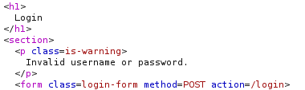
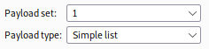
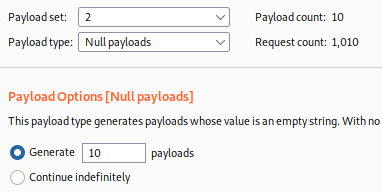
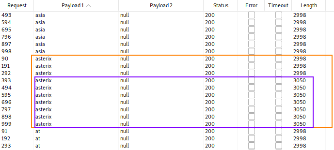
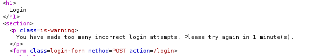
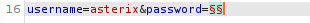
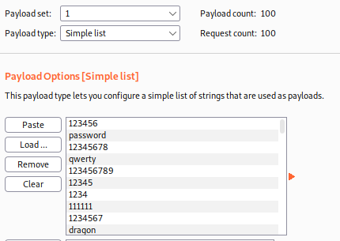
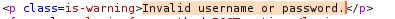
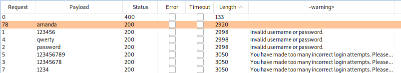
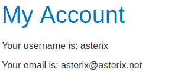

Username enumeration via Account locking
Websites sometimes try to prevent brute-forcing attack by locking the account if certain suspicious criteria are met (usually a set number of failed login attempts)
These login error information can help an attacker to enumerate usernames.
In the example that follow only correct usernames will have the response “You have made too many incorrect login attempts” after too many tries.
Instead with incorrect usernames we have limitless tries. This could help an attacker to identify correct usernames.
1. Try randomly to login and observe the response

2. Use a wordlist of username, we need to observe the response to see if when an username is correct give us a different response
Use Burp Intruder Cluster Bomb

 
3. As we can see in the screenshot below this username(a correct one) will give us different response


4. Burp Intruder Sniper: Enumerate passwords on the username found


With the Options → Grep - Extract set to

5. Start the attack

There is one password that does not give us any error
Let's try this combination: asterix:amanda
6. It works!

Bibliography:
https://portswigger.net/web-security/authentication/password-based/lab-username-enumeration-via-account-lock